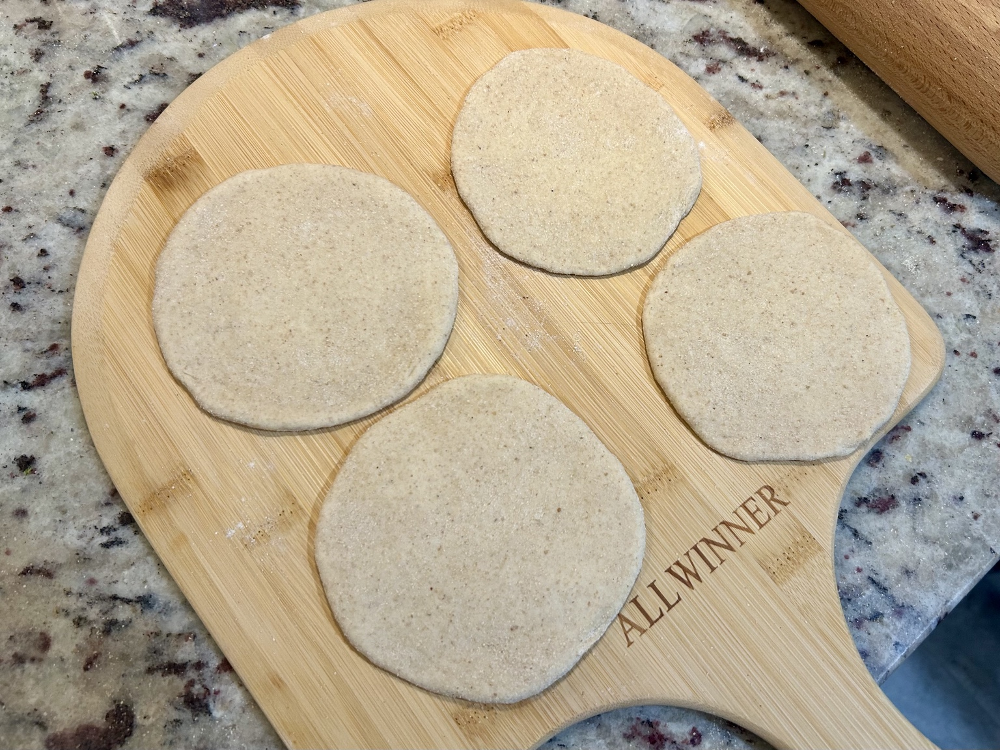
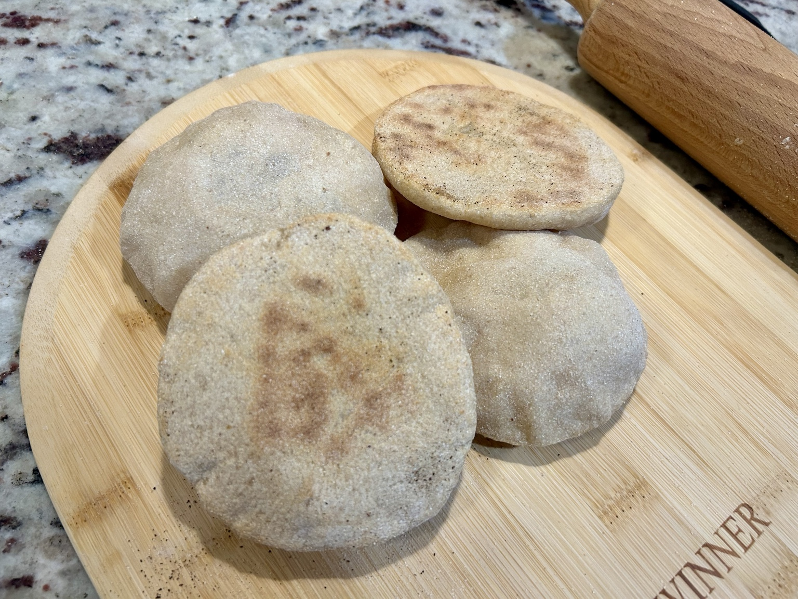
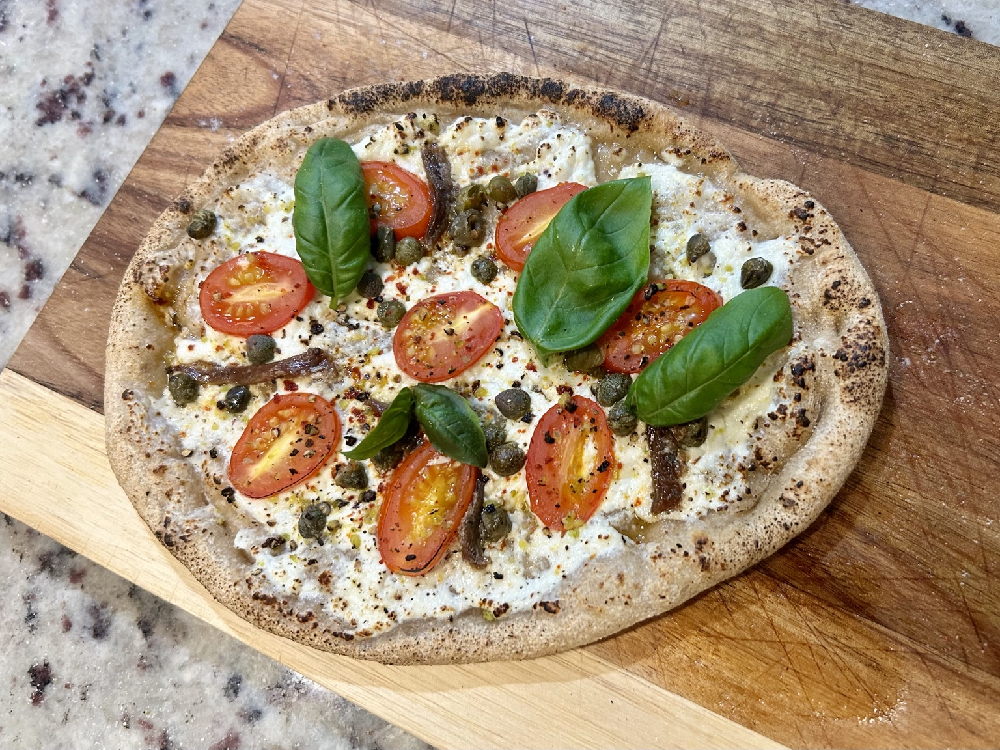
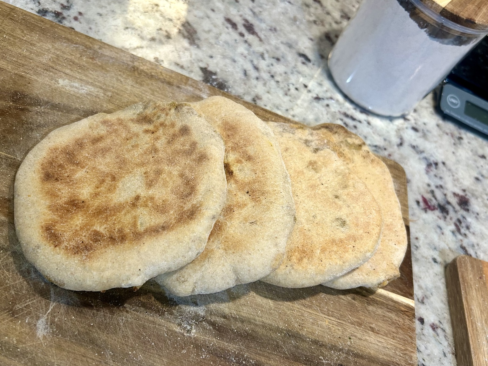
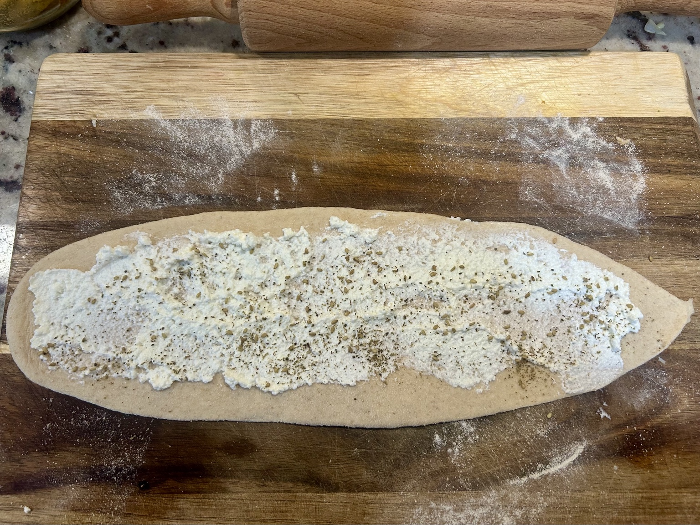
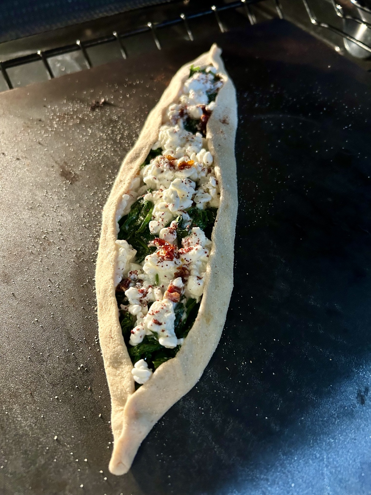
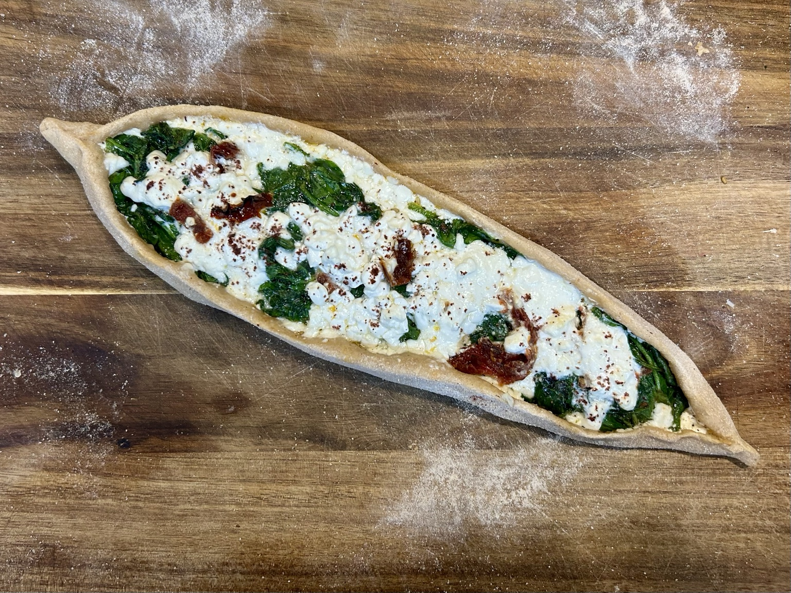

Bread
Universal Discard Dough
A soft, supple general-purpose dough built around sourdough discard, kefir, and whole-wheat flour. One base dough, several very different breads.







The dough is genuinely versatile, as the pictures show: pita bread, pizza, Indian stuffed parathas, and pide all come from the same base dough.
Ingredients
- 330 g bread flour
- 220 g whole-wheat flour
- 100 g sourdough discard, 100% hydration
- 180 g plain kefir
- 148 g water
- 10 g salt
- 4 g instant yeast
- 8 g honey
Method
- Mix the flours, sourdough discard, kefir, 125 g of the water, salt, yeast, and honey until no dry flour remains.
- Rest for 15–20 minutes.
- Knead until smooth and elastic, adding the remaining water gradually as needed. The finished dough should be soft, supple, and slightly tacky.
- Cover and let rise at room temperature until noticeably expanded, about 1 1/2–2 hours.
- Use straight away, or divide, cover, and refrigerate overnight for more flavour. Bring chilled dough back toward room temperature before shaping.
Using the dough
This is deliberately a general-purpose dough rather than a formula tied to one bread. It works for pizza, pita, pide, baked flatbreads, stuffed breads, and Indian stuffed parathas. The photographs above show how far the same dough can be pushed without changing the base recipe.
For pizza or pide, bake as hot as the oven allows, ideally at 475–500°F, on a thoroughly preheated stone, steel, or heavy sheet. For pita or small flatbreads, roll moderately thin and bake on a very hot surface until puffed and browned.
Notes
Add the final water gradually and judge by feel rather than forcing it all in. The endpoint is a smooth, elastic, soft dough that remains only slightly tacky.